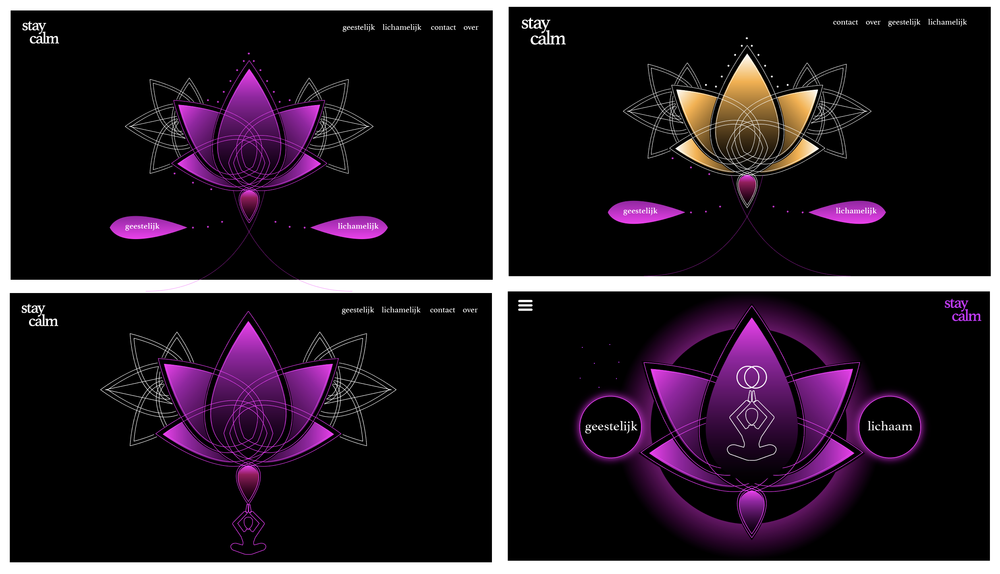

Grid en Kleur
Een toegewezen kleur en hieruit de sfeer naar voren halen. Paars. Bij de kleur paars dacht ik direct aan spiritualiteit omdat de paarse kleur een ander wereld laat zien doordat het onbekend is.

Week 1,2 en 3 - Verkennen
De eerste weken was het verkennen van de kleur en daarbij onderzoek. Bij de opdracht was het belangrijk om de sfeer naar voren te brengen. Hieronder staan een aantal moodboards die de spirituele sfeer overbrengen.
Week 4 en 5 - Uitingen
In deze weken heb ik een website gemaakt met verschillende uitingen om spiritualiteit te tonen.

Week 6 en 7 - Resultaat
De link verwijst naar mijn gemaakte Spirituele website.